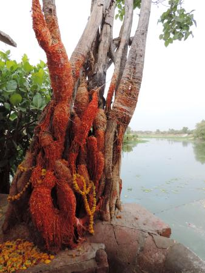
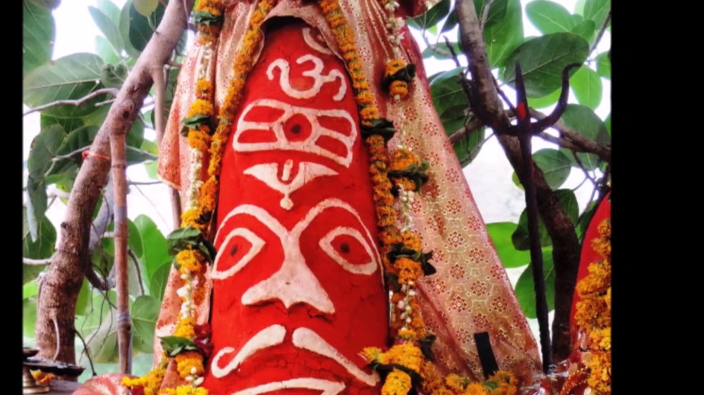

उज्जैन के पास भैरवगढ़ के पूर्व में विमल जल-वाहिनी शिप्रा के मनोहर तट पर 'सिद्धवट' का स्थान है।
सोरों 'शूकरक्षेत्र' में जिस प्रकार वाराहपुराण वर्णित 'गृद्धवट' है, प्रयाग' में 'अक्षयवट' हैं, नासिक में पंचवट हैं,
'वृंदावन' में वंशीवट हैं तथा गया में 'गयावट' हैं, उसी प्रकार उज्जैन में पवित्र 'सिद्धवट' हैं।
वैशाख मास में यहाँ भी यात्रा होती हैं। कर्मकाण्ड, मोक्ष कर्म, पिण्डदान एवं अंत्येष्टि के लिए प्रमुख स्थान माना जाता हैं।
नागबलि, नारायण बलि-विधान प्राय: यहाँ होता रहता है।

हिंदू पुराणों में इस स्थान की महिमा का वर्णन किया गया है। यहाँ तीन तरह की सिद्धि होती है संतति, संपत्ति और सद्गति।
तीनों की प्राप्ति के लिए यहाँ पूजन किया जाता है। सद्गति अर्थात पितरों के लिए अनुष्ठान किया जाता है।
संपत्ति अर्थात लक्ष्मी कार्य के लिए वृक्ष पर रक्षा सूत्र बाँधा जाता है और संतति अर्थात पुत्र की प्राप्ति के लिए उल्टा सातिया (स्वस्विक) बनाया जाता है।
यह वृक्ष तीनों प्रकार की सिद्धि देता है इसीलिए इसे सिद्धवट कहा जाता है। यहाँ पर कालसर्प शांति का विशेष महत्व है, इसीलिए कालसर्प दोष की भी पूजा होती है |
सिद्धावत के पास भैरगढ़ गांव सदियों से अपनी टाई और डाई पेंटिंग के लिए प्रसिद्ध है |
वट वृक्ष के मूल पर, कहते हैं, मुगल बादशाहों ने धार्मिक महत्व जानकर कुठार चलाया था, वृक्ष नष्ट कर उस पर लोहे के बहुत मोटे पतरे-तवे जड़ा दिए थे।
कहते हैं कि उस पर भी अंकुर फूट निकले, आज भी वृक्ष हरा-भरा है। मंदिर में फर्श लगी हुई है।

भावुक समाज अभिषेक-पूजन, भेंट चढ़ाता रहता है। यहाँ शिप्राजी की विस्तृत धारा बहती है। दृश्य बड़ा सुंदर है।
प्रतिभा भी सिद्धवट की तरह होती है। आप उसे सात तवों से ढँक दें तो भी वह उन्हें फाड़कर बाहर आती है।
साधकों और लेखकों को यहाँ सदैव प्रेरणा मिलती रहती है।